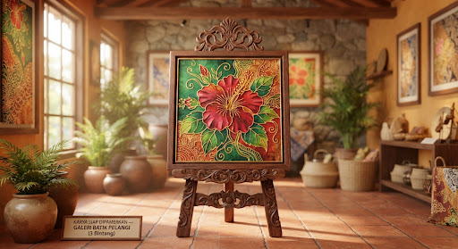
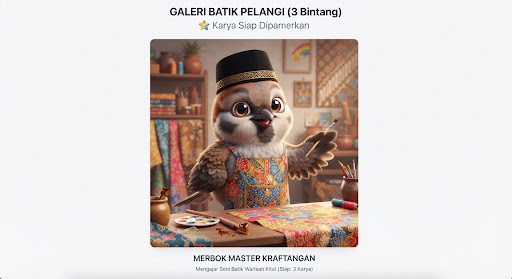

workspace_premium
Gred Cemerlang • Tahap 1 Tahun 1
Karya Siap & Dipamerkan! 🎨✨
Galeri Batik Pelangi • Ruang Pameran Cilik
star
Kemas
star
Cemerlang!
star
Warna Hidup
download
Kekuda Kayu Mahoni
Pameran Dinding #1

check_circle
Lilin Kering Sepenuhnya
brush
Bunga Raya Gemilang Melati
Pelukis Cilik: Wira Adam (Tahun 1 Cerdik)
No. Koleksi #001
Hari Ini • 10:30 AM
Nilai Kraf
palette
120

Cikgu Merbok
Guru Kraf Galeri Batik“Masya-Allah, cantiknya adunan merah kesumba dan urat lilin canting adik Wira Adam! Corak Bunga Raya ini layak menjadi hiasan dinding utama galeri kita!”
military_tech Ganjaran & Kemajuan Galeri
Terkumpul Serta-merta
star
+100
Bintang KSSR Seni
monetization_on
+80
Syiling Desa
storefront
+25
Tarikan Pelawat
visibility
Kini Dipamerkan di Dinding Utama!
Pelawat sedang mengagumi karya anda (5 Cilik)